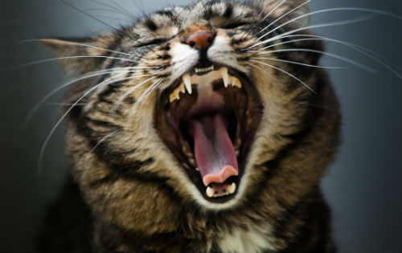

Как отучить кошку орать?
Кошки умеют орать столь громко, что невсегда понятно, как такой громкий звук помещается в таком небольшом животном. Часто кошки начинают орать по ночам, чем доставляют массу неудобств своим хозяевам. Почему это происходит и как бороться с кошачьим ором, мы и расскажем в этой статье.
Как отучить кошку орать: причины и решения
Процесс «отучения» кошки от привычки покричать зависит от причин этого крика. Итак, кошки кричат, потому что:
• Ищут полового партнера
И кошки, и коты истошно кричат во время «гона», так они сигнализируют окрестным собратьям о желании спариваться, и своей готовности к этому. Решить эту проблему очень просто – достаточно кастрировать животное, причем лучше пораньше.
• Хотят есть
Кошки – ночные хищники, они привыкли питаться на рассвете и закате, мелкими порциями. И они привыкли есть тогда, когда хочется, а не тогда, когда надо. Если вы не хотите вставать в 4 утра, чтобы покормить своего питомца – оставьте ему порцию еды на ночь. Если же по каким-то причинам, коту нельзя есть ночью или оставленной порции ему не хватает – не поддавайтесь на его просьбы, иначе кот сообразит, что вами легко манипулировать.
• Болеют
На самом деле, кошки очень редко кричат от боли, стараясь до последнего скрывать свои проблемы. Но они могут кричать при невозможности опорожнить мочевой пузырь или кишечник. Если ваша кошка кричит, сидя на лотке, – необходимо показать ее врачу немедленно.
• Боятся
Кошки могут кричать от страха, например, на столе у ветеринара или в переноске по дороге к новому месту. Но также кошку могут напугать некоторые звуки, другие животные, странные запахи и т.д. Чтобы помочь кошке справиться со стрессом можно дать ей успокоительные (после консультации с врачом) или применить средства с феромонами.
• Глухие
Глухие кошки иногда могут громко кричать из-за того, что не слышат собственного голоса, или из-за того, что им страшно. Если у вас старая или белая кошка с голубыми глазами, причина ее криков, скорее всего в этом. И, к сожалению, исправить тут ничего нельзя.
• Старые
У старых кошек ветеринары наблюдают когнитивные расстройства чем-то напоминающие старческую деменцию у людей, такое состояние может приводить к беспричинным крикам. К сожалению, и с этим ничего не поделаешь, хотя, возможно, могут помочь успокоительные\феромоны.
• Разговорчивые
Все сиамо - ориентальные кошки разговорчивы от природы, не меньше любят поболтать курильские бобтейлы, анатолийские кошки, бурмы, турецкие ваны и представители некоторых других пород. Разговорчивой может оказаться и беспородное животное. Но обычно, разговорчивые кошки не орут, а просто мяукают часто и порой весьма настойчиво. Тут тоже нет никаких решений – только терпение и смирение.
Если кошка орет – это точно неспроста, поэтому не наказывайте ее, а выясните, в чем причина такого поведения.